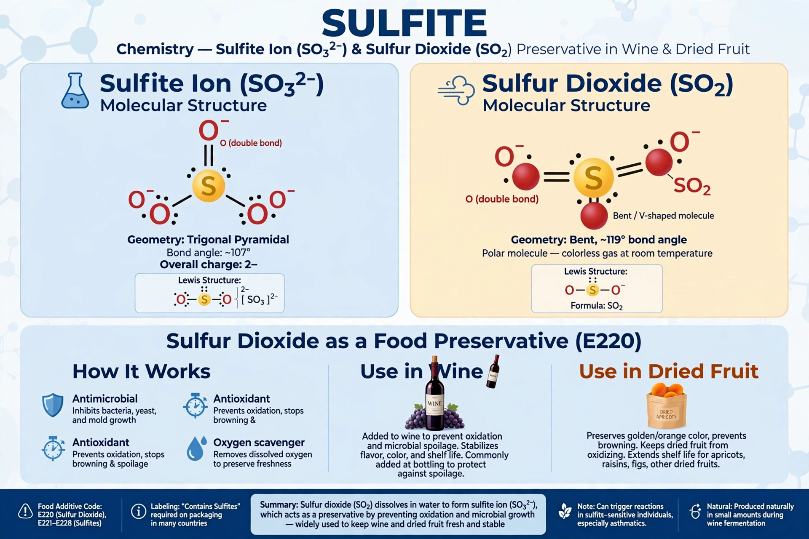

Sulfites are compounds containing the sulfite ion, SO32−. Salts such as sodium sulfite, sodium metabisulfite and sulfur dioxide are widely used as preservatives and antioxidants in foods and drinks, especially wine and dried fruit.

SulfiteThe sulfite ion has a trigonal pyramidal structure. In acid it releases sulfur dioxide. Sulfites occur naturally in some fermented foods and are also produced in small amounts by the human body during metabolism of sulfur-containing amino acids.
A minority of people, especially some with asthma, are sensitive to sulfites, experiencing bronchospasm, flushing or, rarely, anaphylaxis-like reactions. Labelling of sulfites above 10 mg/kg or 10 mg/L is required in many jurisdictions. Sulfite oxidase deficiency is a rare fatal genetic disorder.